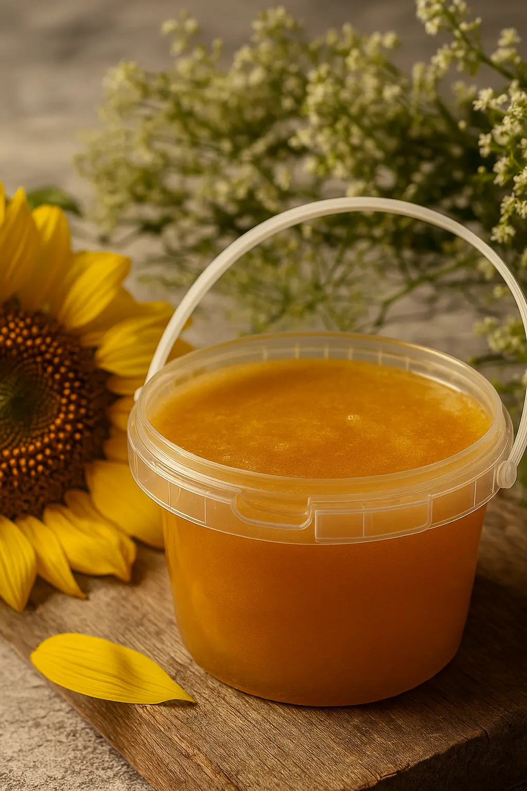
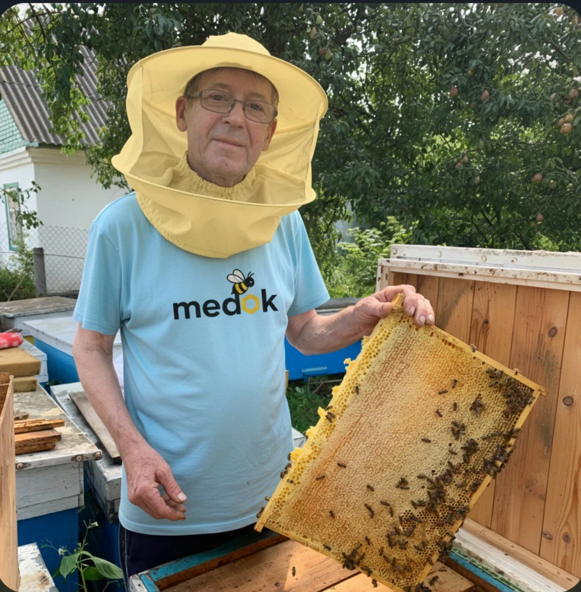

01 · Квітковий і збалансований
Мед різнотрав’я
- Квітковий букет із лугів і гаїв
- Збалансований смак, універсальний
Мед із сімейної пасіки
Мед із Київщини, у якому відчувається літо. Липовий, акацієвий мед і різнотрав’я — від пасіки до вашого столу, Новою поштою по всій Україні. Ціни від 150 грн за банку.
Збираємо й фасуємо самі
Без домішок
Доставка по Україні
Колекція сезону
Три сорти натурального меду в наявності — від делікатної акації до виразного різнотрав’я. Кожен доступний у банках 0,5, 1 і 3 літри: оберіть об’єм і додайте мед у кошик.
01 · Квітковий і збалансований
02 · Запашний і теплий
03 · Ніжний і прозорий

04 · Насичений і кремовий
Наразі немає в наявності
Medok — сімейна пасіка в селі Мала Олександрівка на Київщині. Мед качаємо самі, фасуємо по 0,5, 1 і 3 літри та відправляємо у будь-яке відділення Нової пошти по Україні. Нічого не додаємо й нічого не змішуємо: у банці лише той мед, який дали бджоли цього сезону.
Не знаєте, з чого почати? Купити липовий мед варто, якщо любите виразний аромат до чаю; акацієвий мед — найделікатніший і найдовше залишається рідким; мед різнотрав’я — найуніверсальніший і найдоступніший за ціною. Різницю між ними ми детально розібрали в порівнянні трьох сортів, а умови відправлення — на сторінці доставки меду по Україні.

Люди за кожною банкою
Наша сім’я працює з бджолами понад 40 років. Самі доглядаємо пасіку, відкачуємо мед і готуємо його до відправки — спокійно, уважно, без зайвого.
Просто замовити
Обираєте сорт і об’єм — ми підтверджуємо деталі та відправляємо мед Новою поштою.
Порівняйте сорти, об’єми та ціни.
Вкажіть контакт і зручне відділення.
Надсилаємо Новою поштою по Україні.
Коротко про важливе
Відповіді про склад, доставку й оплату. Повні умови зібрані на сторінці «Доставка й оплата».
Усі питання та відповідіНі. У банці — натуральний мед без доданих домішок.
Вартість визначає Нова пошта за чинними тарифами перевізника.
Так, замовлення можна оплатити при отриманні через Нову пошту. Також доступна повна передоплата.
Приймаємо повну передоплату або післяплату при отриманні у відділенні «Нової пошти».
Смак Київщини
Три сорти зараз у наявності. Почніть із того, який найбільше схожий на ваш ранок.
Коротко і по суті
Матеріали про вибір, зберігання і перевірку меду та повні умови доставки й оплати.